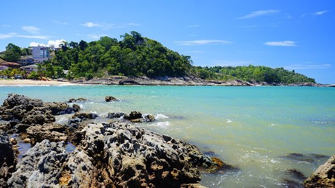
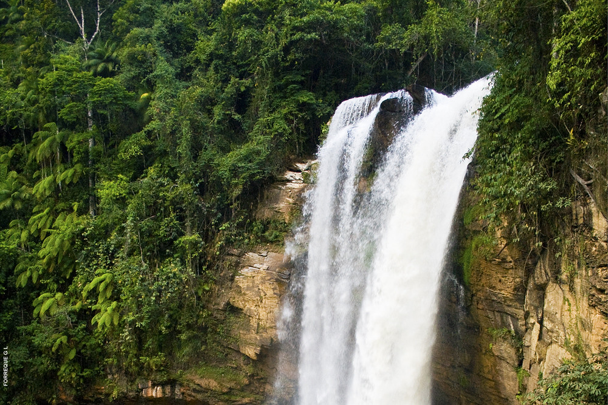
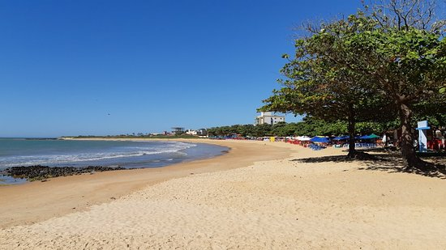
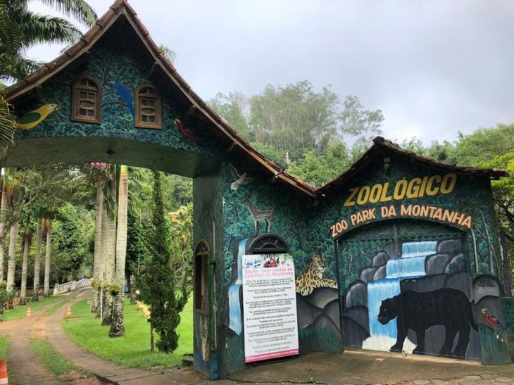
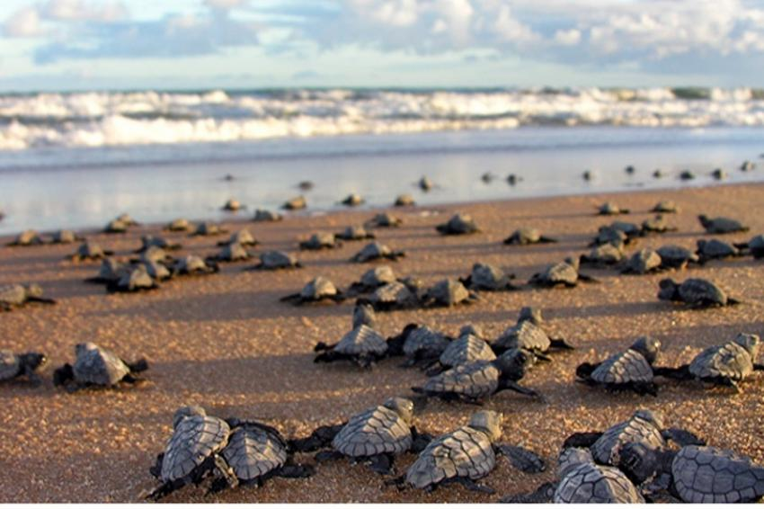

O Pico da Bandeira é uma divisa natural entre o município de Ibitirama, no Estado do Espírito Santo e do Alto Caparaó, no Estado de Minas Gerais.
Ruínas do Rio Salinas
Anchieta - ES
As Ruínas do Rio Salinas se situam em meio a natureza, ao lado do Rio Salinas, que é um dos afluentes do Rio Beneventes.
Praia de Ubu
Anchieta - ES
A água que banha a praia possui uma linda cor azul, e a areia é ideal para as crianças poderem se divertir.
Cachoeira de Salto Grande
Iconha - ES
Uma das inúmeras cachoeiras banhadas pelo Rio Iconha. Local perfeito para se livrar do estresse do dia a dia.

Praia dos Namorados
Anchieta - ES
Uma das melhores praias do litoral Sul do Estado. Conta com um mar tranquilo e não tão profundo, ideal para a família se divertir.
Dunas de Itaúnas
Itaúnas - ES
As Dunas de Itaúnas são consideradas Patrimônio Mundia da Humanidade pela UNESCO. As dunas começaram a se formar por volta da década de 70, e atualmente podem ter até 30 metros de altura.
Separados por nossa equipe para você
Museu Vale
Vila Velha - ES
O Museu Vale possui um respeitado acervo com mais de cem anos de história, e também conta com um centro de artes contemporâneas. O lugar perfeito para você que gosta de admirar a nossa história.

Cachoeira de Matilde
Alfredo Chaves - ES
A Cachoeira de Matilde, também conhecida como Cachoeira do Engenheiro Reeve, possui a maior queda livre de água de todo o Estado do Espírito Santo.
Parque Estadual Paulo César Vinha
Guarapari - ES
Se você é daquelas pessoas aventureiras, que gostam de conhecer novos lugares, o Parque Estadual Paulo César Vinha é o local ideal para você.

Praia dos Castelhanos
Anchieta - ES
A Praia dos Castelhanos é uma das praias mais urbanizadas do município de Anchieta. Com uma extensão de aproximadamente 2 km de um lindo litoral, para você poder aproveitar bastante com toda a sua família.

Zoo Park da Montanha
Marechal Floriano - ES
Atualmente, o zoológico Zoo Park da Montanha é o único presente no Estado do Espírito Santo.

Projeto Tamar - Base Guriri
São Mateus - ES
Bem como outras bases do Projeto Tamar, a base de Guriri tem como objetivo a proteger as tartarugas marinhas ques estão a beira da extinçãono litoral brasileiro.